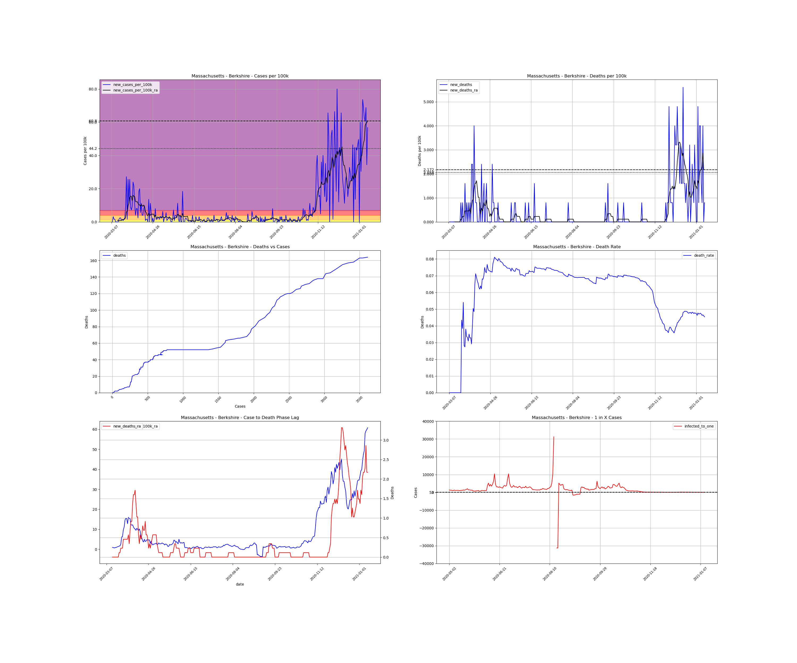
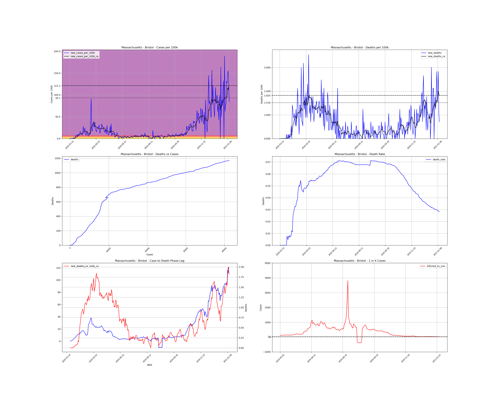
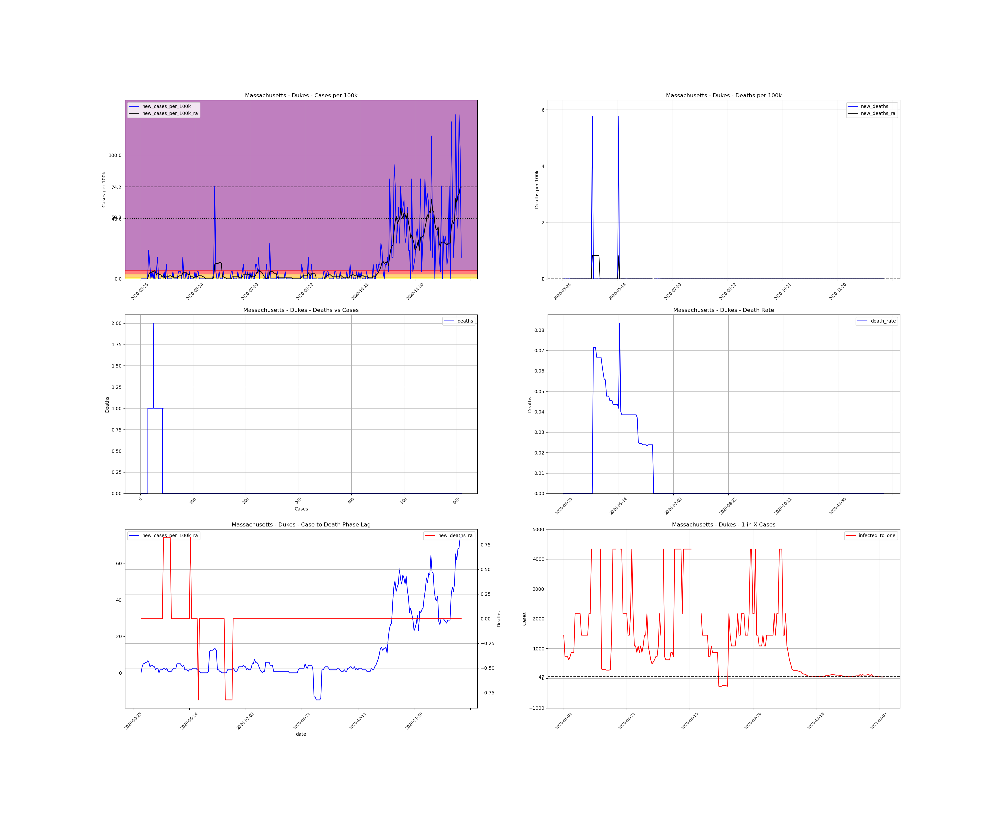
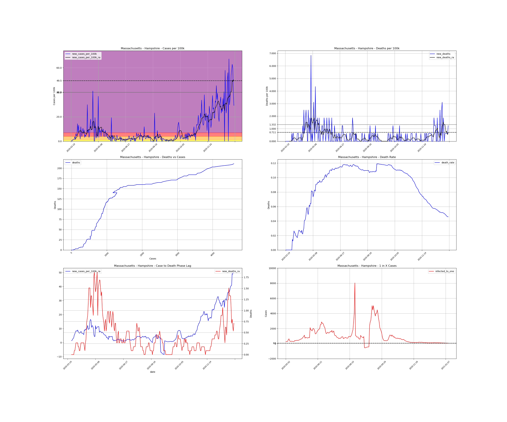
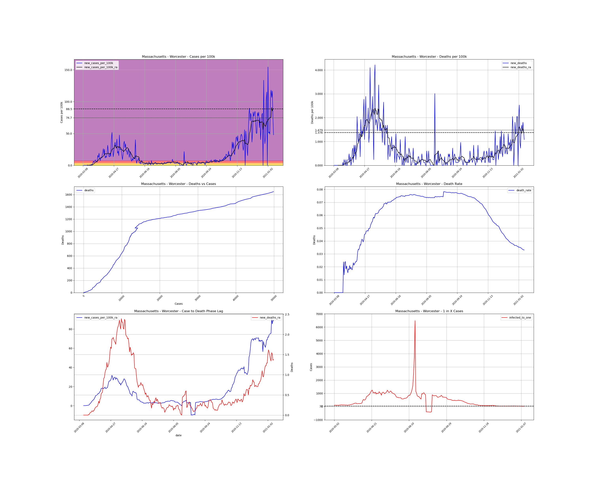

<h1>Massachusetts Counties</h1><table><tr><td><a id="#Barnstable">Barnstable</a></td></tr><tr><td><a id="#Berkshire">Berkshire</a></td></tr><tr><td><a id="#Bristol">Bristol</a></td></tr><tr><td><a id="#Dukes">Dukes</a></td></tr><tr><td><a id="#Essex">Essex</a></td></tr><tr><td><a id="#Franklin">Franklin</a></td></tr><tr><td><a id="#Hampden">Hampden</a></td></tr><tr><td><a id="#Hampshire">Hampshire</a></td></tr><tr><td><a id="#Middlesex">Middlesex</a></td></tr><tr><td><a id="#Nantucket">Nantucket</a></td></tr><tr><td><a id="#Norfolk">Norfolk</a></td></tr><tr><td><a id="#Plymouth">Plymouth</a></td></tr><tr><td><a id="#Suffolk">Suffolk</a></td></tr><tr><td><a id="#Worcester">Worcester</a></td></tr></table>